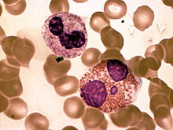
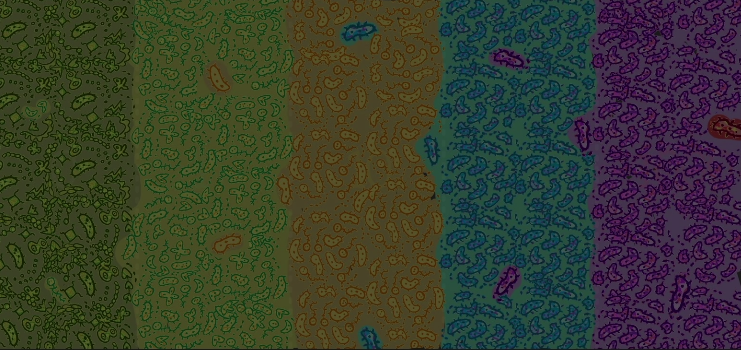
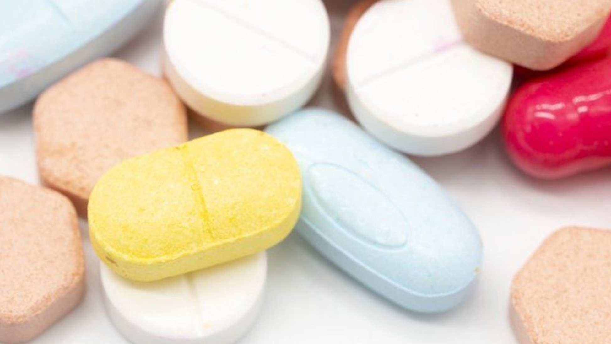

¿Quiénes somos?

Hola, somos Kirill, Sofía y Joshua (Kisojo). Un grupo de estudiantes de la escuela Santa Clara International School. Nos conocemos desde hace dos años y este proyecto nos lo propuso nuestro amigo Kirill y nos pareció algo interesante sobre lo que investigar y hablar.
Introducción
El término «superbacteria» hace referencia a cepas de bacterias que son resistentes a la mayoría de los antibióticos que se usan de forma común en la actualidad. Las superbacterias son generalmente bacterias gramnegativas.
Historia de los antibióticos

Los antibióticos son medicamentos que combaten las bacterias en personas y animales. Sirven para matar las bacterias o dificultar su crecimiento y multiplicación. El término antibióticos significa 'contra la vida' en este caso, contra los microbios.
El primer antibiótico descubierto fue la penicilina, en 1928 por Alexander Fleming. Con el descubrimiento de la penicilina comenzo la era de los antibióticos, las propias defensas del cuerpo ganaron un poderoso aliado. Fleming y otros realizaron una serie de experimentos en las 2 décadas siguientes usando penicilina que tomaron de los cultivos de moho que mostraron su capacidad de destruir bacterias infecciosas. Pudieron producir suficiente penicilina como para probarla en animales y luego en humanos.
A partir de 1941, encontraron que incluso los niveles bajos de penicilina curaban infecciones muy graves y salvaban muchas vidas. Las compañías farmacéuticas estaban muy interesadas en este descubrimiento y empezaron a producir penicilina con propósitos comerciales. Con el éxito de la penicilina, empezó la carrera para producir otros antibióticos.
¿Como evolucionarón las bacterias?
Los antibióticos nos ayudan a combatir las bacterias sin embargo han surgido las Super bacterias, bacterias que son resistentes a la mayoría de los antibióticos, antes de empezar a explicar cómo evolucionaron las bacterias hay que aclarar que son los antibióticos realmente.
Los antibióticos nos ayudan a combatir las bacterias y básicamente alteran las reacciones químicas que permiten la vida bacteriana, por ejemplo la penicilina interfiere en el funcionamiento de la pared celular de las bacterias y así los granulocitos (Los granulocitos ayudan al cuerpo a combatir infecciones bacterianas. La cantidad de granulocitos en el cuerpo normalmente aumenta cuando se presenta una infección grave. Las personas que tienen una cantidad menor de granulocitos son más propensas a tener infecciones graves más a menudo) pueden devorar las bacterias con más facilidad.
Antibióticos como la tetricilina impiden que las bacterias se reproduzcan, otros alteran la química de las bacterias impidiendo que generen ciertas vitaminas que necesitan para vivir. Con los antibióticos teníamos la defensa perfecta contra las bacterias, pero no contabamos con la evolución.
¿Como evolucionaron?
Puede ser que en algún momento existiera una bacteria inmune a los efectos de los antibióticos, en circunstancias normales a lo mejor esa bacteria inmune podría haber muerto de hambre, pero cuando usamos un antibiótico lo que hacemos es destruir o eliminar a la mayor parte de las bacterias, ahora la bacteria inmune tiene mas probabilidades de sobrevivir que cuando habia mas bacterias, ahora si repetimos esto varias veces mas, mas bacterias morirán (aparte de la inmune) y habrá más bacterias inmunes a los antibióticos.
El experimento
En un experimento en la universidad de Harvard colocaron una placa de petri con agar (jalea vegetal que nutre bacterias) y la dividieron en niveles. El primer nivel no contenia antibioticos, el segundo nivel tenia una cantidad moderada de antibioticos, el siguiente 10 veces mas, el siguiente 100 veces mas y el ultimo mil veces mas.
Colocaron bacterias en el nivel mas bajo y se empezaron a reproducir y al llegar al nivel 1 se detuvieron, hasta que aparecio una bacteria inmune que se empezo a reproducir, llenando el nivel 1, luego al llenar el nivel 1 aparecio otra bacteria mas resistente que las otras y las bacterias siguieron evolucionando, hasta que ocuparon por completo la placa.
¿Por qué son un problema?
Al contrario que las bacterias normales las super bacterias son resistentes a los antibióticos, que hasta ahora han sido la cura.
El problema principal es que nos estamos quedando sin alternativas con las que tratar patógenos, en particular esos que causan infecciones adquiridas en el hospital, pero que tienen po sibilidad de extenderse por toda la comunidad.
Esto indica que la resistencia a los antibióticos podría convertirse en una catástrofe global que, de momento, no muestra signos de disminuir. Las predicciones apuntan que para el año 2050 las superbacterias pueden causar más de 10 millones de muertes anuales en todo el mundo.
Además, los problemas de salud derivados de las resistencias a los antibióticos podrían costarle al planeta un billón de euros anuales en atención médica, lo que conduciría a una reducción de entre el 2% y el 3,5% en el producto interior bruto.
La OMS ha listado a las bacterias patógenas multirresistentes en tres grupos de prioridad:
- El grupo 1: prioridad crítica. Incluye a Acinetobacter baumannii, Pseudomonas aeruginosa y algunas enterobacterias como Klebsiella pneumonie, Escherichia coli y varias especies de los géneros Serratia y Proteus. Todas ellas son resistentes a los carbapenémicos.
- El grupo 2: prioridad elevada. Incluye a Enterococcus faecium (resistente a la vancomicina), Staphylococcus aureus (resistente a la meticilina y con sensibilidad intermedia y resistencia a la vancomicina), Helicobacter pylori (resistente a la claritromicina), Campylobacter spp. (resistente a las fluoroquinolonas), Salmonella (resistente a las fluoroquinolonas) y Neisseria gonorrhoeae (resistente a la cefalosporina y a las fluoroquinolonas).
- El grupo 3: prioridad media. Incluye a Streptococcus pneumoniae (sin sensibilidad a la penicilina), Haemophilus influenzae (resistente a la ampicilina) y Shigella spp. (resistente a las fluoroquinolonas).
Las super bacterias más peligrosas
Prioridad 1: critica:
- Acinetobacter baumanii
- Pseudomonas aeruginosa
- Familia Enterobacteriaceae, productoras de betalactamasas de espectro extendido – ESBL:
- Klebsiella pneumoniae
- Escherichia coli
- Serratia marcescens
- Proteus spp.
Prioridad 2: elevada:
- Enterococcus faecium
- Staphylococcus aureus
- Helicobacter pylori
- Campylobacter spp.
- Familia Salmonellae
- Neisseria gonorrhoeae
Prioridad 3: media:
- Streptococcus pneumoniae
- Haemophilus influenzae
- Shigella spp.
Cómo parar la evolución de las bacterias
Para ralentizar la evolución de las super bacterias, no debes usar antibióticos si un médico no te lo indicó y no debes dejar de tomarlos cuando te sientas mejor. Si la bacteria es dañada por los antibióticos pero no está muerta, podría convertirse en una súper bacteria. luego de compartir su adn por un proceso llamado conjugacion bacteriana.